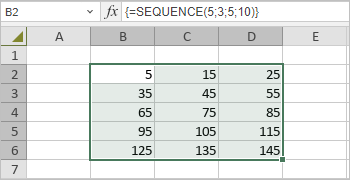

SEQUENCE funkcija
SEQUENCE funkcija je jedna od funkcija za matematiku i trigonometriju. Koristi se za generisanje niza sekvencijalnih brojeva.
Sintaksa
SEQUENCE(rows, [columns], [start], [step])
SEQUENCE funkcija ima sledeće argumente:
| Argument | Opis |
|---|---|
| rows | Koristi se za određivanje broja redova koji će biti vraćeni. |
| columns | Koristi se za određivanje broja kolona koje će biti vraćene. |
| start | Koristi se za određivanje početnog broja u nizu. |
| step | Koristi se za kontrolu uvećanja svake sledeće vrednosti u nizu. |
Napomene
Imajte u vidu da je ovo formula niza. Da biste saznali više, pročitajte članak Umetanje formula niza.
Kako primeniti SEQUENCE funkciju.
Primeri
Slika ispod prikazuje rezultat koji vraća SEQUENCE funkcija.
